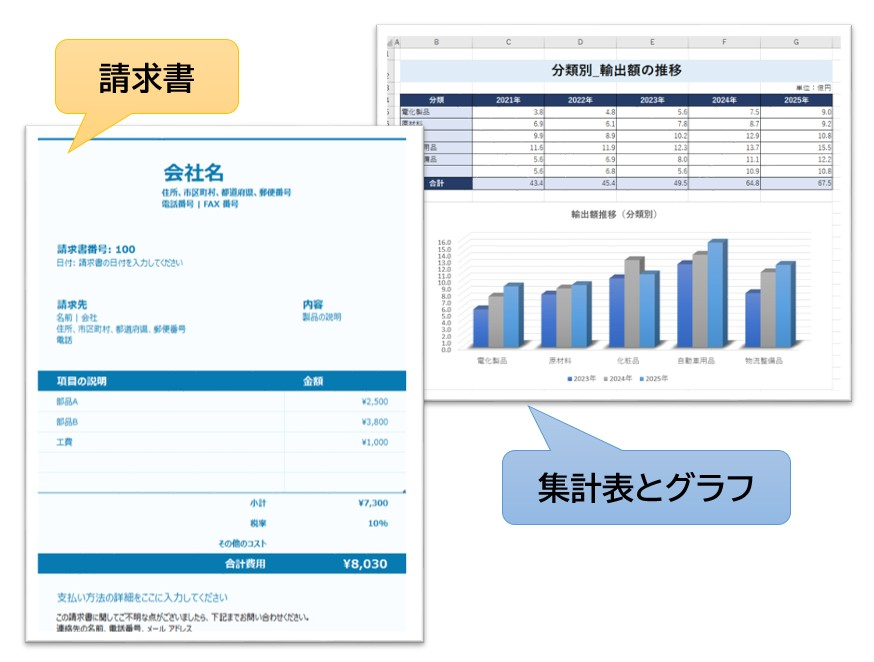
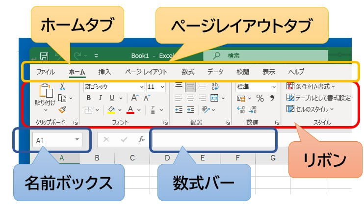
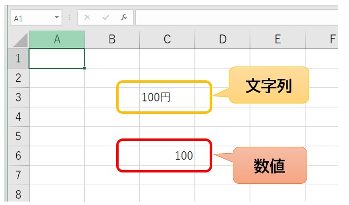
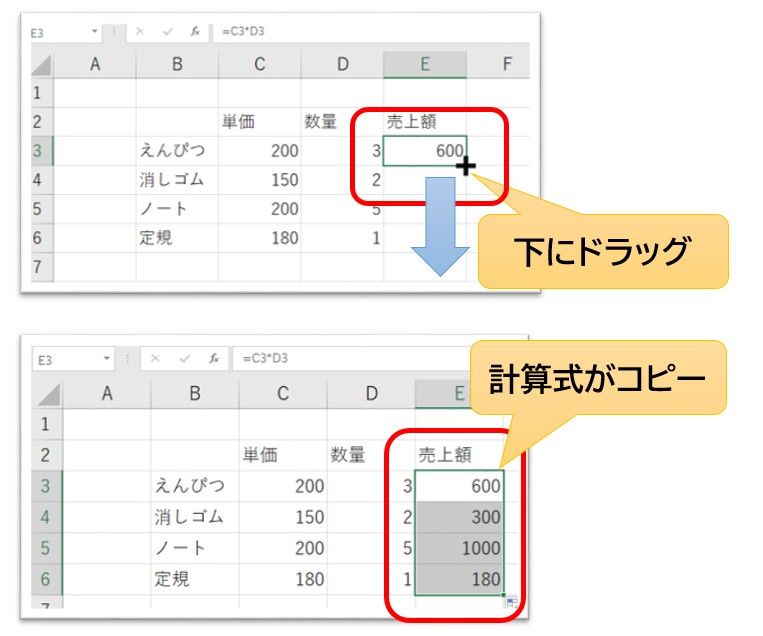
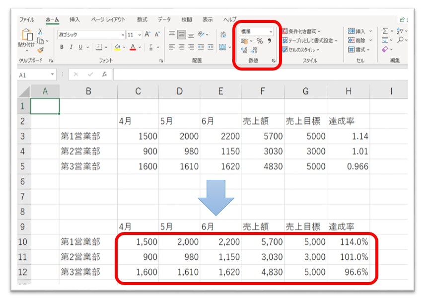
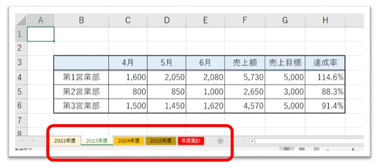
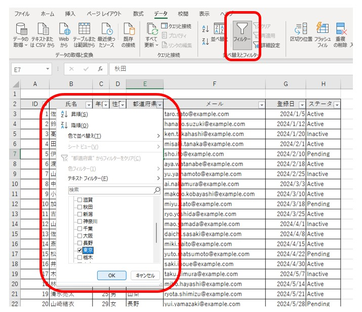
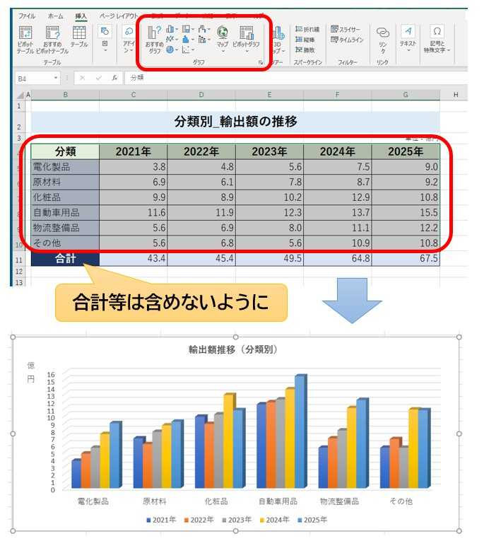
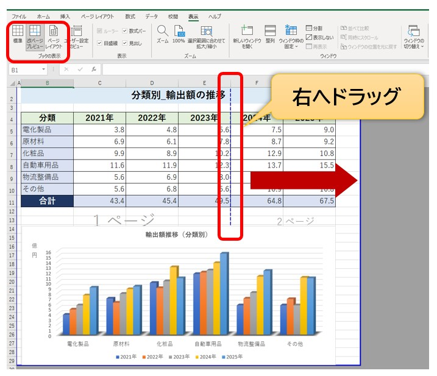

実際に仕事で困らないためのExcel講座
現役講師が教える、情報を整理・計算・管理するための本質的な考え方
Microsoft Excel（エクセル）は、事務職において毎日のように使われる「計算とデータ管理」のためのソフトです。見積書、請求書、売上管理、勤務表など、職場で見かけるあらゆる数字はExcelによって支えられています。
「自分は数学が苦手だから難しいのでは？」と不安に思う必要はありません。Excelは、計算という間違いが起きやすい作業を、正確に素早く代行してくれる心強いツールです。正しい考え方さえ身につければ、Excelがあなたの強力な味方になってくれます。
この講座では、数多くの初心者を指導してきた現役パソコン講師の視点から、機能の「名前」と「実務での理由」をセットで、初心者の方にも分かりやすく順番に解説します。
Excelはどのようなソフトなのか
Excelを単なる「表を作るソフト」だと思っていませんか？ 確かにきれいに罫線を引いた表を作ることができますが、それはExcelの機能の一部です。
Excelの本質は、「情報を整理し、計算し、管理するソフト」です。

▲ 見積書や売上管理など、実務のあらゆる場面でExcelは活躍します
Wordとの最大の違いは、入力された情報同士を関連付けて、自動的に計算をさせることができる点です。例えば売上管理表において、1箇所の数値を書き換えた瞬間に、全体の合計金額までが一瞬で更新される。こうした正確でスピーディな処理が可能になることで、業務効率の向上につながります。
実務でExcelが活用される場面
- お金の管理： 見積書、請求書、売上集計、経費精算。
- 時間の管理： 勤務表、シフト表、スケジュール管理、工程表。
- 情報の管理： 顧客リスト、住所録、在庫管理、備品管理。
- データの分析： アンケート集計、グラフ作成、昨対比の算出。
仕事で扱う数字やリストのほとんどは、Excelという土台の上で管理されます。Excelを正しく扱えるようになることで、正確な資料を作れるようになり、仕事を進めやすくなります。
Excelでは、1つのファイルを「ブック（本）」、その中の各ページを「ワークシート（紙）」と呼びます。1冊の大きな「売上管理」という本の中に、「1月分」「2月分」……と何枚もの紙が挟まっているイメージを持っておくと、管理がしやすくなりますよ。
画面の名称と役割を一致させましょう
操作を覚える前に、画面の各部の名前を確認しましょう。職場での指示は「数式バーを確認して」のように用語で行われることが多いため、これらを知っておくことがコミュニケーションの基礎になります。

▲ 画面上部のリボンに加え、Excel特有の「数式バー」などが操作の鍵となります
- リボン： 画面上部のメニューエリアです。計算、装飾、配置などのボタンが集まっています。
- クイックアクセスツールバー： 画面最上部にある小さなボタン群です。「上書き保存」などを配置できます。
- 名前ボックス： 現在どのマス目（セル）を選んでいるかが表示されます。
- 数式バー： 選択しているセルの「中身（正体）」が表示される、非常に重要な場所です。
- ワークシート： 文字や数字を入力するメインの作業エリアです。
- シートタブ： 画面下部にあり、複数のワークシートを切り替えるのに使います。
Excelはセル番地を使って計算する
ここがExcel学習において最も大切なポイントです。プロの事務スタッフは、Excelを単に数字を計算するものではなく、「セル番地（セルの住所）を使って計算するソフト」だと考えています。
- 列（れつ）： 縦方向の並びです。画面上部にある「A, B, C...」というアルファベットで表されます。
- 行（ぎょう）： 横方向の並びです。左端にある「1, 2, 3...」という数字で表されます。
- セル番地： 列と行を組み合わせて「A1」や「B5」のように呼びます。これが各セルの「住所」になります。
例えば、「100＋200」という計算結果を直接入力するのではなく、Excelに対して「A1番地の数字とB1番地の数字を足してください」と命令を出します。こうしておくことで、後からA1の数字を書き換えたとしても、Excelが自動で「住所の中身が変わった」と判断し、計算結果を最新の状態に更新してくれます。
Excelの広大なシートの中で、「今自分がどこを触っているかわからない！」となったら、左上の「名前ボックス」を確認しましょう。そこに「C10」とあれば、あなたはC列の10行目を選んでいることが一瞬でわかります。
データ入力の基本と正確な編集方法
Excelでの作業は、セルに文字や数字を打ち込むことから始まります。Excelには「入力された情報の種類を自動で判別する」という機能が備わっています。この仕組みを知っておくことが、正確な計算への近道となります。

▲ 入力した情報の「正体」は、セルの配置で見分けることができます
数値と文字列の決定的な違い
Excelでは、入力された内容が「計算に使える数字（数値）」か「ただの文字（文字列）」かを厳密に区別しています。
- 数値： セルの「右側」に寄ります。計算に使用できます。
- 文字列： セルの「左側」に寄ります。計算には使用できません。
例えば、数字の後ろに「100円」のように単位まで直接入力してしまうと、Excelはそれを「文字列」と判断して左側に寄せます。そうなると、合計を出そうとしても正しく計算されません。数字は数字だけを入力し、単位などは「表示形式」という別の設定に任せるのがExcelの作法です。
入力した内容を少しだけ直したい時、セルをダブルクリックしていませんか？ 実務では、セルを選んで F2 キー を押すのがスマートな手順です。マウスに持ち替える手間が省け、入力ミスを減らすことができます。 また、入力中に「あ、間違えた！」と思ったら、慌てずに Esc キー を押してください。入力を取り消して、元の状態へ戻すことができますよ。
データの消去：BackspaceとDeleteの違い
意外と知られていないのが、データを消すキーの使い分けです。
- Backspace キー： 入力モードに切り替わり、カーソルの左側の1文字を消します。
- Delete キー： 入力モードにせず、選択しているセルの「中身」を一瞬で空っぽにします。
実務で表の中身を一気に消したい時は、Delete キーを使うのが効率的です。
セル・行・列を自在に操作する技術
Excelのシートを使いこなすためには、範囲選択のバリエーションと、行列のサイズ調整を覚える必要があります。これらは、情報を整理して見せるための重要なスキルです。

▲ 目的に合わせた最適な選択方法を使い分け、正確に指示を出しましょう
効率的な範囲選択のテクニック
- 範囲選択： セルの中央からマウスをドラッグします。
- 離れた場所を選択： Ctrl キーを押しながらクリックします。離れた場所を一気に色付けしたい時などに便利です。
- 行・列全体の選択： 上部のアルファベット（列）や左端の数字（行）をクリックします。
- シート全体の選択： Ctrl + A で一括選択します。
列の幅と行の高さの整え方
入力した文字が長すぎて隣にはみ出したり、隠れたりすることがあります。そんな時は、列の境界線をダブルクリックしてください。これを「自動調整」と呼びます。Word講座でもお伝えした「揃える」意識をExcelでも持ち、情報が欠けていない読みやすい幅に整えることが大切です。
データの途中に新しい項目を入れたい時は、行番号や列番号を右クリックして「挿入」を選びます。逆に不要なデータは「削除」します。 また、一時的に見せたくないデータがある場合は「非表示」にすることも可能です。これらを使いこなすことで、複雑な表も管理しやすくなります。
保存とファイル形式の正しい選び方
作成した大切なデータを守るために、保存は適切な形式で行う必要があります。Word講座と同様、Excelにもいくつかの保存形式がありますが、実務で使うのは主に2種類です。これらを正しく使い分けられるようになりましょう。
- Excelブック（.xlsx）： Excelの標準的な保存形式です。計算式や書式、複数のシートをすべて保持したまま保存されます。自分で編集を続ける場合や、チーム内でデータを共有する場合は、常にこの形式を使用します。
- PDF形式： 見積書や請求書を取引先にメールで送る際など、「完成した成果物を渡す時」に使用します。相手の環境でレイアウトが崩れたり、誤って数字を書き換えられたりするリスクを防ぐことができます。
実務で一番使うショートカットキーは、間違いなく Ctrl + S（上書き保存） です。1時間集中して作った表が、パソコンのフリーズで一瞬にして消えてしまう……。そんな悲劇を避けるためにも、「5分作業したらCtrl+S」を指の癖にしてしまいましょう。自分を守るための大切な技術ですよ。
数式の基本：Excelに計算の命令を出す
Excelの真骨頂は、セルに入力されたデータを使って自動で計算をさせることにあります。初心者が最初につまずきやすいポイントですが、理屈さえわかればこれほど便利なものはありません。

▲ 「数字」ではなく「場所」を指定して計算命令を出します
計算は必ず「＝」から始まります
Excelに「これから計算をしますよ」と伝えるための合言葉が「＝（イコール）」です。セルを選択し、最初にキーボードから「＝」を入力することで、Excelは計算モードに切り替わります。
セル番地を計算するという考え方
例えば、A2番地に売上、B2番地に原価が入っているとします。利益を出したい時、頭の中で計算して答えを直接打ってはいけません。Excelに対して以下のような命令を出します。
＝A2−B2
これは「A2番地の中身から、B2番地の中身を引いてください」という意味になります。番地で計算しておけば、後から売上の数字が書き換わったとしても、Excelが自動で「住所の中身が変わったな」と判断し、利益も一瞬で再計算してくれます。実務ではこの「セル番地を使って計算する」ことが標準です。
- 足し算： +
- 引き算： -
- 掛け算： * （アスタリスク）
- 割り算： / （スラッシュ）
オートフィルで入力を効率化する
1行目の数式が完成したら、下の行にも同じ計算をさせたいですよね。Excelには「オートフィル」という、非常に便利な連続コピー機能があります。

▲ セルの右下にある小さな四角（フィルハンドル）が効率化の鍵です
オートフィルでできること
セルの右下にマウスポインターを合わせると、形が「黒いプラス記号」に変わります。これを下にドラッグすることで、以下の処理が完了します。
- 数式のコピー： 1行目の「＝A2-B2」を、2行目では「＝A3-B3」というように、Excelが気を利かせて番地をずらしながらコピーしてくれます。
- 連続データの作成： 「1、2、3……」といった連番や、日付、曜日などを自動で埋めることができます。
基本関数を使って計算を自動化しましょう
数式をさらに便利にしたものが「関数（かんすう）」です。複雑な計算を、あらかじめ決められた「名前」で呼び出すことができます。事務職で使われる関数の多くは、これから紹介する基本の5種類でカバーできます。
![[ホーム]タブのオートSUM（Σ）ボタンとそのメニュー一覧](img/guide-excel-functions.jpg)
▲ [ホーム]タブの「Σ」ボタンの右から、よく使う関数をすぐに呼び出せます
SUM関数（サム：合計）
仕事で最も使われる、基本中の基本となる関数です。売上集計、請求書、勤務表など、実務で合計を出さない場面はありません。「＝SUM(A1:A10)」のように、計算したい範囲の端と端を指定するだけで、一瞬で合計を算出できます。
「＝SUM…」と手で入力するのは難しく感じるかもしれません。そんな時は、[ホーム]タブにある 「Σ（オートSUM）」 ボタンを直接押してみてください。Excelが自動で合計範囲を推測して数式を作ってくれます。まずはこのボタンを押すことから始めて、慣れてきたら自分でも数式を書いてみる、というステップで大丈夫ですよ。
AVERAGE関数（アベレージ：平均）
データの傾向を分析する際に使用します。1日の平均売上や平均残業時間など、合計を個数で割るという手間をExcelが代行してくれます。
COUNT関数とCOUNTA関数の使い分け
ここは実務でミスが起きやすいポイントです。数えたい対象によって使い分けましょう。
- COUNT（カウント）： 数値が入っているセルの数だけを数えます。
- COUNTA（カウントエー）： 空白ではないすべてのデータ（文字も含む）を数えます。
例えば、出席名簿で名前に「○」がついている人数を数えたい場合は、文字を数えられる「COUNTA」を使う必要があります。
大量の数値データの中から「最高気温」や「最低価格」を瞬時に見つけたい時は、MAX関数やMIN関数を使いましょう。目視で探すと見落としがちなデータも、Excelなら正確に抽出してくれます。
数式のコピーと場所の固定（絶対参照）
オートフィルで数式をコピーした際、Excelは計算対象の番地を1行ずつずらしてくれます。しかし、実務では「特定の場所だけはずらしたくない」という場面が必ず出てきます。これは初心者が最初につまずきやすいポイントですが、非常に重要な仕組みです。

▲ 「$」マークを付けることで、数式をコピーしても場所が固定されます
絶対参照とF4キーの活用
例えば、すべての商品の金額に「特定のセルに入った消費税率」を掛けたい場合、数式をコピーしても税率の場所が動かないように「ロック」しなければなりません。この操作を「絶対参照（ぜったいさんしょう）」と呼びます。
固定したいセル番地を選んだ状態で、キーボードの F4 キー を1回押してください。番地が「$C$1」のように変化します。この「$」マークが、Excelにおける「ここを動かさないで！」という固定の印です。
表を見やすく整える書式と表示形式
計算が正しくできても、見た目が整っていない表は、情報の受け取り手に不安を与えてしまいます。Word講座で大切にしていた「揃える」意識をExcelでも持ちましょう。

▲ [ホーム]タブの「表示形式」を使って、数字の見た目を整えます
桁区切りのコンマと単位の表示
大きな数字を扱う際、「桁区切り（,）」は必須のマナーです。「1000000」と「1,000,000」では、読み間違いのリスクが大きく変わります。リボンのコンマボタンを押すだけで設定できるため、常に意識しましょう。
- 通貨スタイル： 数字の頭に「￥」マークを付けます。
- パーセントスタイル： 「0.1」を「10%」といった割合表示に変換します。
セル結合と配置のバランス
複数のセルをまとめて大きなタイトルを作る「セル結合」は便利ですが、データの並べ替えや集計を頻繁に行う表では、使いすぎに注意が必要です。まずは結合に頼らず、文字の配置（中央揃えなど）でバランスを取ることから始めましょう。
セルの中に文字が入り切らない時、無理に列幅を広げたくない場合は「折り返して全体を表示」を使いましょう。セルの高さを自動で調整し、1つのセルの中に複数行で収めてくれますよ。
罫線を引いて「表」を完成させる
Excelの画面には最初から薄いグレーの線が見えていますが、実はこれは「枠線」といって、印刷したときには表示されません。真っ白な紙に表として印刷するためには、自分で「罫線（けいせん）」を引く必要があります。
範囲を選択した状態で、[ホーム] タブの「フォント」グループにある 罫線 ボタンの横の「▼」をクリックします。 一覧から「格子（こうし）」を選ぶと、選択した範囲のすべての線に黒い線が引かれます。
実務では、単にすべての線を引くだけでなく、見出しの下だけを二重線にしたり、表の外枠だけを太い線で囲んだりすることで、情報の区切りをより分かりやすく伝える工夫がなされます。線の種類や太さを使い分けることで、書類の「見やすさ」は格段に向上します。
罫線は、データの入力や計算式がすべて終わった「仕上げ」の段階で引くのがお勧めです。途中で行を足したりセルを移動させたりすると、せっかく引いた線がズレてしまい、二度手間になることが多いからです。まずは中身を完璧にし、最後にビシッと線を引いて表を完成させましょう。
複数のシートを活用してデータを管理する
1つのブック（ファイル）の中に、複数の「ワークシート」を作成することができます。月ごとの売上、拠点ごとのデータなど、情報を切り分けて管理する際に非常に有効です。

▲ 画面下のシートタブを操作して、情報を整理しましょう
- シートの追加： 画面下の「＋」ボタンで新しいシートを増やせます。
- 名前の変更： タブをダブルクリックして「2022年度」など中身がわかる名前にします。
- 色の変更： タブを右クリックして「シート見出しの色」を設定できます。重要なシートを目立たせることで、操作ミスを防げます。
- コピーと移動： Ctrl キーを押しながらタブを右にドラッグすると、全く同じレイアウトのシートを複製できます。毎月の報告書を作る際に重宝します。
シート間集計（3D集計）の活用
「2022年度」から「2025年度」までのシートが揃ったら、それらを合計した「年間集計」のシートを作ってみましょう。このように、複数のシートをまたいで計算することを「シート間集計（3D集計）」と呼びます。

▲ 全シートの同じ番地を合計することで、一瞬で年間集計が完了します
シート間集計を行うための絶対条件は、「すべてのシートのレイアウト（表の形）を統一しておくこと」です。データの位置が1セルでもズレていると、正しい合計が出せません。最初に「ひな形」となるシートを1枚作り、それをコピーして使うのが実務の基本です。
情報を自在に操るデータ管理術
実務において、Excelは「大量の情報を管理するデータベース」としても使われます。住所録や在庫リストなど、データの集まりを整理する際は、以下の機能を使いこなしましょう。

▲ フィルターを使えば、膨大なデータから必要な情報だけを瞬時に取り出せます
- 並べ替え： 売上の高い順や、あいうえお順にデータを整列させます。この際、必ず「表の中のどこか1つのセル」を選んでから実行しましょう。範囲選択が不完全だと、データがバラバラに壊れる原因となります。
- フィルター： 「特定の商品のデータだけを表示する」といった抽出が可能です。実務で最も多用する機能のひとつです。
- 入力規則： 「このセルにはリストから選んで入力してほしい」という場合にドロップダウンリストを作成できます。入力ミスを未然に防ぐための重要な仕組みです。
データの塊を [挿入] タブから 「テーブル」 に変換してみてください。見た目が見やすくなるだけでなく、フィルターが自動で付き、データの追加に合わせて数式が自動で拡張されるようになります。実務で「壊れにくい表」を作るための最も安全な方法です。
情報を視覚的に伝えるグラフの作成
数字の羅列だけでは読み取ることが難しい「変化」や「割合」も、グラフにすることで一瞬で共有できるようになります。まずは実務で最も多用される「縦棒グラフ」の作り方を覚えましょう。

▲ （項目名）も含めて選択するのが、きれいなグラフを作るコツです
グラフ作成の手順とポイント
グラフにしたい範囲を選択し、[挿入] タブからグラフの種類を選ぶだけで作成できます。このとき、数値だけでなく項目名も一緒に選択することが大切です。これにより、Excelが自動でグラフの軸に名前を付けてくれます。
- タイトルの変更： 作成されたグラフの「グラフタイトル」をクリックすれば、好きな名前に書き換えられます。
- 配置の調整： グラフの端をドラッグして、表の邪魔にならない場所へ移動させましょう。
失敗を防ぐための印刷設定と確認
ExcelはWordと違い、1枚のシートが非常に広いため、何も設定せずに印刷すると表が途中で切れてしまうことがあります。印刷前には「紙の中にどう収まっているか」を確認する手順が必要です。

▲ 改ページプレビューを使えば、どこで紙が切り替わるかが一目でわかります
改ページプレビューで範囲を確定させる
右下のステータスバーにある「改ページプレビュー」ボタンを押すと、印刷される範囲が青い枠線で表示されます。この青い線をマウスでドラッグして動かすことで、「ここまでを1枚目に入れる」といった調整が直感的に行えます。
どうしても1ページに収めたいときは
「あと1列だけが2枚目にはみ出してしまう」という場合は、[レイアウト] タブの「ページ設定」を確認してください。横幅を「1ページ」に設定するだけで、Excelが全体のサイズを自動で微調整し、きれいに1枚に収めて印刷してくれます。
設定が終わったら、最後に Ctrl + P を押して「印刷プレビュー」を確認しましょう。画面上で見えても、プリンターの特性で端が切れることがあります。実際に紙に打ち出す前に、印刷プレビューで最終チェックをする習慣を身に付けておきましょう。
Excel初心者がつまずきやすいポイント
講習の現場で特によく見られる、上達を妨げてしまう「もったいない失敗」と対策をまとめました。これらを意識するだけで、トラブルに動揺せず、落ち着いてExcelを操作できるようになります。
入力した数字が日付になってしまう
「1-2」と入力したら「1月2日」になってしまい、「壊れた？」と驚く方は少なくありません。これはExcelが入力内容を自動で日付と判断したためです。セルの表示形式や入力方法を見直せば、防げるケースがほとんどです。
「001」が「1」になってしまう
社員番号や商品番号を入力したつもりなのに、先頭の「0」が消えてしまうことがあります。Excelは数字として扱うため、不要な0を自動で省略します。番号を扱う場合は文字列として入力する方法を覚えておくと安心です。
コピーしたら表のデザインまで変わってしまった
データだけコピーしたつもりが、色や罫線まで一緒に貼り付いてしまうことがあります。「貼り付け」の方法を使い分けるだけで、この失敗は防げます。
セルを結合しすぎて後から編集できなくなる
タイトルを中央に表示したくてセルを結合した結果、並べ替えやフィルターが使えなくなることがあります。見た目を整える方法はいくつかあるため、必要以上のセル結合は避けるのがおすすめです。
列の幅を何度も手で調整してしまう
文字が見切れるたびに少しずつ列を広げている方は少なくありません。列の境界をダブルクリックすると、内容に合わせて自動調整できる便利な機能があります。
並べ替えたらデータがバラバラになった
名前だけを並べ替えてしまい、電話番号や住所が別の人の情報になってしまうことがあります。並べ替えは必ず表全体を対象に行うようにしましょう。
「#####」が表示されて壊れたと思ってしまう
セルいっぱいに「#####」と表示されると故障したように見えますが、多くは列幅が足りないだけです。列を少し広げるだけで元の値が表示されます。
「A」と入力したのに「B」「C」にならない
「A」と入力してセル右下をドラッグすれば、「B」「C」「D」…と続くと思っている方は意外と多くいます。しかし、Excelは「A」を文字として認識するため、そのままコピーされるだけです。アルファベットの連番を何度も行いたい場合は、別の方法を使います。
選択したのにグラフが思ったように作れない
表を選んでグラフを作ったのに、横軸がおかしかったり、思っていた形にならなかったりすることがあります。多くは表の形や選択範囲が原因です。グラフは「表の作り方」がとても重要です。円グラフ等は範囲の選び方にコツがあったりします。
数字の後ろに「円」や「個」を入力してしまう
「1,000円」「10個」と入力すると、そのセルは文字として扱われ、計算できなくなることがあります。数字は数字だけ入力し、単位は表示形式で付けるのがExcelの基本です。
計算式をコピーしたら結果がおかしくなった
数式を下へオートフィルしたら、さっきまで合っていた計算結果が急におかしくなることがあります。これはセルの参照先が自動で変わるためです。参照元を固定したい場所は「絶対参照」という仕組みを使うことで、思い通りにコピーできるようになります。判別が難しい場合は、常にCtrl+Z（元に戻す）を使う準備をしておきましょう。
Excelを学んでいると、思い通りにいかない場面に必ず直面します。そんな時は無理に自力で修正しようとせず、すぐに Ctrl + Z で一歩戻りましょう。今回紹介したポイントを一つずつ確認していけば、必ず解決の糸口が見つかりますよ。
データの保存ルールとバックアップ
作成した大切なデータを守るために、保存は適切な方法で行いましょう。現在のExcelで保存すると、ファイル名の末尾には「.xlsx」という拡張子が付きます。これが最新の標準形式です。古い形式（.xls）のまま保存を続けると、最新の機能が使えなくなったり表示が崩れたりする場合があるため、注意しましょう。
最近ではOneDriveなどのクラウド保存による「自動保存」も一般的ですが、手動での保存（Ctrl+S）も忘れずに行いましょう。また、重要なデータは定期的に「名前を付けて保存」で別名コピー（例：20260701_売上管理_v2.xlsx）を作っておくと、万が一の際に安心です。
Excel学習のまとめ
Excelは、一度にすべてを覚える必要はありません。機能の場所よりも「なぜその操作をするのか」という本質を大切にしてください。
まずは簡単な家計簿や買い物リスト、勤務時間の記録など、自分に身近な表を一つ作ってみることから始めてみましょう。実際に手を動かして作った経験が、何よりの学習になります。そして、操作に困ったときはいつでもこのページに戻って確認してください。
少しずつできることを増やしていけば、仕事でも自信を持ってExcelを使えるようになります。あなたの学びを、心から応援しています。